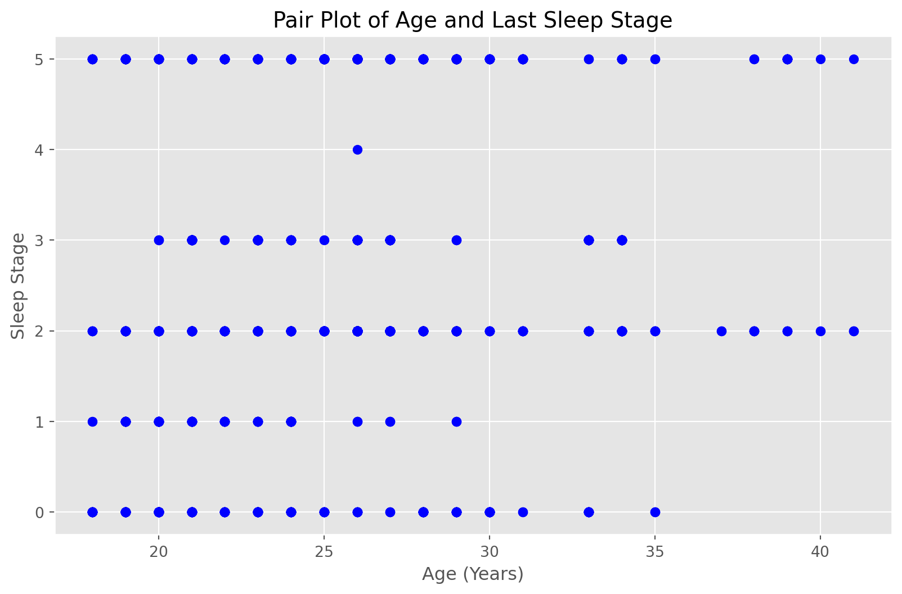
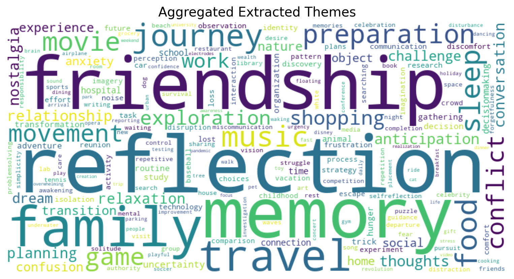

The following notebook contains work for our dream experience analysis project for CS670 term project at the UO. Data was taken from the aggregate study of Wong et al. penned the Dream EEG and Mentation (DREAM) database.
We think that this topic is worth exploring because Dreaming is a very human experience that we all share. To date, it remains an unexplored topic for serious scientific analysis at scale. We hope that the following project shows the potential to use datascience techniques with dreams and related data to find patterns and relationships in our dreaming.
Project Format
Section 1 - Data:
We introduce the data, its format and raw state as well as the motivations of its authors and gathers.
We explain and justify methods for cleaning the data
We include exploratory visualizations with slices and plots.
Section 2 - Research Questions:
We list the questions and problems we investigate in this project.
We include explanation of why these questions are interesting and relevant.
Section 3 - Models and Visualizations:
We introduce the relevant models and tests we use to approach our questions.
We show relevant visualizations that help us answer our questions.
We provide interpretation of our model results and visualizations.
Section 4 - Results, Analysis, and Discussion:
We summarize our questions, the evidence of our models, visuals, and test.
We explain the limitations and biases of our approach
We propose future directions for work to improve our models and understanding
Section 5 - Impact:
We conclude the report with our thoughts on the short, medium, and long term impacts of a project like this.
Section 1: Big Dream Data
1.1 Background on the DREAM Dataset
1.1.1 Who Collected it and What is in it?
The DREAM dataset was created by Wong et al. at Monash University in Australia as a publicly available dream data repository for the global psychology and neuroscience research communities. They define dream data as Magneto/electroencephalography (M/EEG) readings to measure brain waves combined with dream experience reports. They define a dream experience as recollected thoughts, feelings, and experiences during sleep that can recited back to either a human researcher or an audio recorder. It is important to note that their definition of dream experience or more broad than the typically thought of dream experience where one is conscious in a dream reality. They include any form of thoughts or feelings, including day dream like experiences, that come from NREM and REM alike.
Columns included in every report include:
Identifiers: Filename, Case ID, Subject ID, and Treatment Group
M/EEG Related Data: Duration of recording in seconds, Has EMG, Has ECG, EEG sample rate, Number of EEG channels
Last Sleep Stage before Awakening Category: Last sleep stage in categories 0 - Awake, 1 - 4 being NREM stages 1 - 4, and 5 - REM.
Time of Awakening in local time.
Subject Physical Attributes: Assigned Sex, Age, is Healthy (indicating if a sleep disorder is not present)
Dream Experience Categories: -2, -4 - Mixed categorization, 0 - No Dream, 1 - Dream but no Recall, 2 - Dream with Recall.
The point of DREAM is to provide a standard format for researchers in the space to collect data in, so different experiments can be compared to more gereal data. Currently, the DREAM dataset consists of 2649 awakening datapoints from 561 participants across 20 different studies around the globe. For the most part, studies include all columns of data in the report, but some do miss age, sex, or other inputs. As part of the standard, the M/EEG data, each entry has at least 20 seconds of continuos M/EEG data before awakening from at least 2 electrodes, and a sampling rate of at least 100Hz. as well as their specific protocol for collecting the report and the raw text if available. Data is collected on willing participants who sleep with M/EEG monitoring electrodes attatched and dream experiences are recorded with audio. Some studies choose to have a structured series of questions about a dream experience, while other simply record the unstructured speech to text.
This representation choice is meant to give researchers some flexibility in how to record M/EEG data and patient characteristics and experience, while ensuring the most useful and basic information is kept uniform in the Report.csv. However, it does miss much of the dream experience that could be helpful in answering questions, like how much total sleep, how many full sleep cycles, participant sentiment going to sleep, … etc. This is a generalized but limited dataset.
1.1.2 Why Was it Collected and Aggregated?
At a high level the neuroscience and psychology research communities are interested in correlating different stages of sleep, from the 3 non-Rapid Eye Movement (NREM) stages to REM, with different recorded dream experiences. Researchers want this data to investigate a variety of research topic including: dreaming and clinical sleep disorders, dreaming and neurocognitive functions like memory, and basic correlations of brain activity and reported dream experiences (i.e. how do the different stages of sleep correlate with dream experiences?).
The DREAM dataset comes as a solution to the largest problem in the field of Dream and other neuroscience research of small sample sizes for experiments. Typically, study sizes range from 10s - 100s of participants with a handful of sleep and awakening data due to cost and the effort of data collection. As a result, many studies make general claims that do not generalize well across many populations of sleepers globally. Additionally, data collection and reporting methods vary across research groups making it tough, if not impossible, to use other groups’ data to test and confirm other hypotheses. As a result, Wong, et al. proposed the DREAM dataset as a standardized recording and reporting method for DREAM data.
1.2 Working with the DREAM Dataset
We set out on this project mainly interested in the raw text narrations of dream experiences. We wanted to do some exploratory analysis with dream themes and sentiment and see what kinds of interesting patterns or phenemena could be teased out the dataset. However, we quickly found that working with the data present in the DREAM dataset was not as easy as expected. We now go through experiences working with the data, some of the decisions we made for cleaning, and how that process influenced the questions we chose to explore.
1.2.1 Getting and Understanding the Data
The DREAM Dataset is publicly available at this link hosted by Monash University. It includes just an Excel spreadsheet with the relevant formatting of datasets and the location of each individual study’s data. From there we attempted to download each dataset, but quickly ran into issues. In most cases, the M/EEG data bulked up the filesize to over 10GB, with no way to selective include or exclude that data. And of the 20 studies, only 10 ended up being undamaged and usable after decompression, reducing the usable data from 2649 to 1933 awakenings. The main data from each study was kept in standardized Reports.csv file that kept the relevant information mentioned in 1.1. The unusability of 1/4 of the data was surprsing, but was important lesson to look at more than a single dataset before jumping into a project.
Continuuing the trend of unusability, only 3 of the remaining 10 studies had actual speech to text transcriptions of the dream narratives. These 3 studies were labeled Zhang, LODE, and Oudiette. 1 more study had a recorded dialogue between participants and researchers about the sleep exprience, but after review we found that the dialogues weren’t useful in picking out actual dreams. They were a 2 person Q/A between the participant and the researcher and would have taken more transformation to try and pull out themes. Moreover, there was more heterogeneity than expected even among the three promising studies. Each study had different dream recording and reporting formats and were in different languages. The Zhang study was in english with all dream raw text in a single spreadsheet, which was easy to copy and use. The LODE and Oudiette studies were in Italian and French respectively and recorded each dream text in a separate text file that had to be translated and copied over manually.
1.2.2 Data Cleaning and Decisions
We chose to break the data into 2 overlapping groups. The first is a larger dataset aggregating the Report.csv from all 10 studies into 1 excel spreadsheet we dub “Global Data” from here on.
It includes the following attributes:
Identifiers: Filename, Case ID, Subject ID, and Study
M/EEG Related Data: Duration of recording in seconds, Has EMG, Has ECG, EEG sample rate, Number of EEG channels
Last Sleep Stage before Awakening Category: Last sleep stage in categories 0 - Awake, 1 - 4 being NREM stages 1 - 4, and 5 - REM.
Time of Awakening in local time.
Subject Physical Attributes: Assigned Sex, Age, is Healthy (indicating if a sleep disorder is not present)
Dream Experience Categories: -2, -4 - Mixed categorization, 0 - No Dream, 1 - Dream but no Recall, 2 - Dream with Recall.
We chose to omit several datafields including the dream text fields, and other less interesting information like treatment group since it was rarely filled in in the original data. We add a column for the name of the study for later study to study comparisons. The goal and use for this slice of the data is to look at comparisons between groups for different physical attributes like sex, age, and time of awakening. We use this in Questions 1 and 2, where we try to predict if a participant has a dream experience.
Next, we do transformations and cleaning to get a 2nd slice of the data focused on the dream text. We dub this slice “Dream Data” from here on.
First, we merge all of the dream text reports from the 3 studies Zhang, LODE, and Oudiette. and translate to english using google translate and batching by language. At this point we had 741 raw dream texts in English. Next, we read through the english text and marked the dream texts with no interesting dream content. This was a subjective decision, made by looking for text that amounted to “I do not remember my dream”. This does influence the final results of this project, as some of our categorizations do not align with the experience category of the authors.
We then wanted extract the themes and sentiment of each dream using ChatGPT with the following prompt:
Please take the following dream text and provide a 3 word summary of the theme and a 2 word summary of the sentiment, ignoring confusion or uncertainty:{Dream Text}
We ask for 3 word and 2 word summaries of the theme and sentiments to give the LLM a constraint to make the output somewhat predicatable, but also give it some room to give expressive answers. We think that having some room for expression would be interesting for a comparison of different LLM models in a future project. Each entry was done with a fresh chat, as to reduce the influence of the LLM using previous dreams as context for the next. Each theme and sentiment was extracted only once.
Finally, we pull out the word count for each dream in it’s native language and in english for some more quantitative predictors for possible use in prediction tasks.
1.2.3 Code for Data Cleaning and Manipulation
The below cells use Python to take the raw aggregated data above and produce 2 slices of cleaned data. All is done using Pandas Dataframes and saving data in .xlsx spreadsheets.
Show the code
# Data Cleaning + Feature Extractionimport pandas as pdimport matplotlib.pyplot as pltimport numpy as npimport os# pwd = os.getcwd()# print(pwd)# FS Setuppwd ="~/Desktop/CS670_Data_Science/Project_Materials"data_path = pwd +"/Data/"# Get the whole datasetfile="All_records.xlsx"unclean_df = pd.read_excel(data_path+file, header=0)# Set Dream Data File Pathnew_file = data_path +"Dream_Records.xlsx"# Now filter out a few things# 1: Isolate Dreamsdream_mask = unclean_df["Real Dream Narrative"] ==1dream_data = unclean_df[dream_mask].copy() # thank you python lol# 1.1: Feature Extraction# Grab some useful things out of the narrativestheme_1 = []theme_2 = []theme_3 = []sent_1 = []sent_2 = []# Start parsing# 1st, themesfor theme in dream_data["ChatGPT Theme"]: themes = theme.split(",") # split on indv themes num_themes =len(themes)if num_themes ==1: t1 = themes[0] t2 ='NA' t3 ='NA'elif num_themes ==2: t1 = themes[0] t2 = themes[1] t3 ='NA'elif num_themes ==3: t1 = themes[0] t2 = themes[1] t3 = themes[2]else:print("Parsing Issue in Themes")raiseValueError() theme_1.append(t1) theme_2.append(t2) theme_3.append(t3)# Next Sentimentfor sent in dream_data["ChatGPT Sentiment"]: sents = sent.split(",") # split on indv themes num_sents =len(sents)if num_sents ==1: s1 = sents[0] s2 ='NA'elif num_sents ==2: s1 = sents[0] s2 = sents[1]else:print(f"Parsing Issue in Sentiments {sents}, with len {num_sents}")raiseValueError() sent_1.append(s1) sent_2.append(s2)# English Dream word count# Native Language Word Countenglish_word_count = [len(x.split()) for x in dream_data["Translation"]]native_word_count = [len(x.split()) for x in dream_data["Text of Report"]]# 1.2: Final Data Set Setup\# add to dream setdream_data["Theme 1"] = theme_1dream_data["Theme 2"] = theme_2dream_data["Theme 3"] = theme_3dream_data["Sentiment 1"] = sent_1dream_data["Sentiment 2"] = sent_2dream_data["English Word Count"] = english_word_countdream_data["Orig Word Count"] = native_word_count# Drop columns I dont want dream_data = dream_data .drop('Remarks', axis=1)dream_data = dream_data .drop('Proportion artifacts', axis=1)dream_data = dream_data .drop('Has more data', axis=1)dream_data = dream_data .drop('Unnamed: 24', axis=1)# Save backdream_data.to_excel(new_file, header=True, index=False)# 2: Get Cleaner Global Dataset# Columns Filename # Case ID Subject ID Experience Treatment group Duration EEG sample rate Number of EEG channels # Last sleep stage Has EOG Has EMG Has ECG Proportion artifacts Time of awakening Subject age Subject sex # Subject healthy Has more data Remarks Study Text of Report Translation ChatGPT Theme ChatGPT Sentiment# Real Dream Narrative# Don't need dreams, some other data hereclean_file = data_path +"clean_records.xlsx"global_data = unclean_df.copy()# Drop Columnsglobal_data = global_data.drop('Treatment group', axis=1)global_data = global_data.drop('Remarks', axis=1)global_data = global_data.drop('Proportion artifacts', axis=1)global_data = global_data.drop('Has more data', axis=1)global_data = global_data.drop('Text of Report', axis=1)global_data = global_data.drop('Translation', axis=1)global_data = global_data.drop('ChatGPT Theme', axis=1)global_data = global_data.drop('ChatGPT Sentiment', axis=1)global_data = global_data.drop('Unnamed: 24', axis=1)global_data = global_data.drop('Real Dream Narrative', axis=1)global_data.to_excel(clean_file, header=True, index=False)print(global_data)
In the following code block, we do some initial visualizations of both slices of data. We look at some attribute distributions with histograms larger aggregate and dream subset datasets to get a high level idea of the data.
1.3.1 Sleep Attributes
First, let’s start with what the sample’s dream experiences and sleep stages look like:
Show the code
# Global data# Start with some basic histograms:plt.style.use("ggplot")plt.figure(figsize=(10, 6))plt.hist(global_data["Experience"], range=(-5, 3), bins =8, align='mid')plt.title("Histogram of Sleep Experiences for All 10 Studies")plt.xlabel("Experience Category")plt.ylabel("Count")plt.show()print(f"Average Experience: {round(global_data["Experience"].mean(), 2)}")print(f"Standard Deviation Experience: {round(global_data["Experience"].std(), 2)}")print(f"Median Experience: {round(global_data["Experience"].median(), 2)}")
Average Experience: 1.36
Standard Deviation Experience: 1.06
Median Experience: 2.0
We see that the majority of entries are either 2, or 0 (since the histogram is left aligned). This means that the majority of participants had some recollection of their dreams.
Now looking at the last sleep stage
Show the code
plt.figure(figsize=(10, 6))plt.hist(global_data["Last sleep stage"], bins=6, range=(0,6), color='purple')plt.title("Histogram of Sleep Stages for All 10 Studies")plt.xlabel("Sleep Stage")plt.ylabel("Count")plt.show()print(f"Average Sleep Stage Before Awakening: {round(global_data["Last sleep stage"].mean(), 2)}")print(f"Standard Deviation of Sleep Stage Before Awakening: {round(global_data["Last sleep stage"].std(), 2)}")print(f"Median Sleep Stage Before Awakening: {round(global_data["Last sleep stage"].median(), 2)}")
Average Sleep Stage Before Awakening: 2.53
Standard Deviation of Sleep Stage Before Awakening: 1.73
Median Sleep Stage Before Awakening: 2.0
we find that oddily, many participants are awoken in NREM (1 - 4) or when not asleep (0). Only ~1/4 of the participants were awoken from REM (5), the stage most commonly associated with dreaming.
1.3.2 Subject Attributes
Now looking at Participant attributes, we start with age:
Show the code
plt.figure(figsize=(10, 6))plt.hist(global_data["Subject age"], bins =20, color='green')plt.title("Histogram of Participant Age for All 10 Studies")plt.xlabel("Age (Years)")plt.ylabel("Count")plt.show()print(f"Average Age: {round(global_data["Subject age"].mean(), 2)} Years")print(f"Standard Deviation of Age: {round(global_data["Subject age"].std(), 2)} Years")print(f"Median Age: {round(global_data["Subject age"].median(), 2)} Years")
Average Age: 25.2 Years
Standard Deviation of Age: 4.62 Years
Median Age: 25.0 Years
It is important to look at the participant attributes in this sample so we have an idea of how well our samples represent different populations of sleepers. From the age histogram, we see that participants are mainly centered around 25 years of age. This may make sense since younger people may be more accessible to psych research studies. However, this may mean that our findings may not generalize to other age groups.
Looking at the assigned sex:
Show the code
plt.figure(figsize=(10, 6))plt.hist(global_data["Subject sex"], bins =2, color='pink')plt.title("Histogram of Assigned Participant Sex for All 10 Studies")plt.xlabel("Assigned Sex: 0 - Male, 1 - Female")plt.ylabel("Count")plt.show()print(f"Average Sex: {round(global_data["Subject sex"].mean(), 2)}")print(f"Standard Deviation of Sex: {round(global_data["Subject sex"].std(), 2)}")print(f"Median Sex: {round(global_data["Subject sex"].median(), 2)}")
Average Sex: 0.62
Standard Deviation of Sex: 0.58
Median Sex: 1.0
we have a majority of participants reporting female, though it is a fairly even split.
1.3.3 Larger Visuals:
We now show a correlation matrix heat map of our predictors:
Show the code
import seaborn as snsf, ax = plt.subplots(figsize=(10, 8))corr = global_data[["Experience", "Last sleep stage", "Subject age", "Subject sex", "Subject healthy"]].corr()sns.heatmap(corr, cmap=sns.diverging_palette(220, 10, as_cmap=True), vmin=-1.0, vmax=1.0, square=True, ax=ax)plt.title("Correlation Heat Map of Numeric Values in 10 Study Data")plt.show()
Interestingly we see some correlation between Age and the last sleep stage. Looking at this in a pair plot
Show the code
plt.figure(figsize=(10, 6))plt.scatter(global_data["Subject age"], global_data["Last sleep stage"], color='blue')plt.title("Pair Plot of Age and Last Sleep Stage")plt.xlabel("Age (Years)")plt.ylabel("Sleep Stage")plt.show()

we see that the lower stages skew younger. This is likely due to how different studies focused on different aged participants and different sleep stages. For example the Zhang study limited ages from 18 - 23 and mainly consists of Stage 2 or lower for sleep cycles.
1.3.4 Dream Data Exploration:
We now repeat the above for our Dream Data
For dream experience:
Show the code
# Dream Subset# Start with some basic histograms:plt.style.use("ggplot")plt.figure(figsize=(10, 6))plt.hist(dream_data["Experience"], range=(-5, 3), bins =8, align='mid')plt.title("Histogram of Sleep Experiences for 3 Dream Studies")plt.xlabel("Experience Category")plt.ylabel("Count")plt.show()print(f"Average Experience: {round(dream_data["Experience"].mean(), 2)}")print(f"Standard Deviation Experience: {round(dream_data["Experience"].std(), 2)}")print(f"Median Experience: {round(dream_data["Experience"].median(), 2)}")
Average Experience: 1.97
Standard Deviation Experience: 0.24
Median Experience: 2.0
Looking at the distribution of sleep experiences, we see that most of the non-recall experiences have been pruned out. This was expected from data cleaning, though interestingly some 0s and 1s made it through. This is likely due to either me missing an “I don’t remember” in the reports, or there being substantial recording material despite the researcher’s reporting no recall. These make up a small minority of the data so we’ll leave it for now.
For Last Sleep Stage:
Show the code
plt.figure(figsize=(10, 6))plt.hist(dream_data["Last sleep stage"], bins=5, color='cyan')plt.title("Histogram of Sleep Stages for 3 Dream Studies")plt.xlabel("Sleep Stage")plt.ylabel("Count")plt.show()print(f"Average Sleep Stage Before Awakening: {round(dream_data["Last sleep stage"].mean(), 2)}")print(f"Standard Deviation of Sleep Stage Before Awakening: {round(dream_data["Last sleep stage"].std(), 2)}")print(f"Median Sleep Stage Before Awakening: {round(dream_data["Last sleep stage"].median(), 2)}")
Average Sleep Stage Before Awakening: 1.27
Standard Deviation of Sleep Stage Before Awakening: 1.6
Median Sleep Stage Before Awakening: 1.0
Looking at the histogram of sleep stages we see an interesting distribution. The majority of dream text with recall actually correspond to Sleep Stages 0 - 3, meaning that many entries are from participants that did not fully fall asleep according to the M/EEG. These entries are more like Day Dreams which may have some influence on the data. These likely come from the Zhang study where participants were woken many times during the night. They report that many of the awakenings at stage 0 (before falling asleep) had the best recall, so this likely biases the data that way.
For Age:
Show the code
plt.figure(figsize=(10, 6))plt.hist(global_data["Subject age"], bins =20, color='olive')plt.title("Histogram of Participant Age for 3 Dream Studies")plt.xlabel("Age (Years)")plt.ylabel("Count")plt.show()print(f"Average Age: {round(dream_data["Subject age"].mean(), 2)} Years")print(f"Standard Deviation of Age: {round(dream_data["Subject age"].std(), 2)} Years")print(f"Median Age: {round(dream_data["Subject age"].median(), 2)} Years")
Average Age: 24.44 Years
Standard Deviation of Age: 5.47 Years
Median Age: 23.0 Years
We see that the average age drops from 25.2 to 24.44. This again may be due to the Zhang study that accounts for ~300 of the 500 remaining dreams. In this study, participants only ranged from 18-23, while the others included other age groups.
Finally the assigned sex breakdown:
Show the code
plt.figure(figsize=(10, 6))plt.hist(dream_data["Subject sex"], bins =2, color='purple')plt.title("Histogram of Assigned Participant Sex for 3 Dream Studies")plt.xlabel("Assigned Sex: 0 - Male, 1 - Female")plt.ylabel("Count")plt.show()print(f"Average Sex: {round(dream_data["Subject sex"].mean(), 2)}")print(f"Standard Deviation of Sex: {round(dream_data["Subject sex"].std(), 2)}")print(f"Median Sex: {round(dream_data["Subject sex"].median(), 2)}")
Average Sex: 0.52
Standard Deviation of Sex: 0.5
Median Sex: 1.0
we see that the sex breakdown is similar to the larger sample.
Finally, the heat map of the subset:
Show the code
import seaborn as snsf, ax = plt.subplots(figsize=(10, 8))corr = dream_data[["Experience", "Last sleep stage", "Subject age", "Subject sex", "English Word Count", "Orig Word Count"]].corr()sns.heatmap(corr, cmap=sns.diverging_palette(220, 10, as_cmap=True), vmin=-1.0, vmax=1.0, square=True, ax=ax)plt.title("Correlation Heat Map of Numeric Values in 3 Study Data")plt.show()
Here we add in the word counts of the dream text as a fun addition in the Original language and the english translation. Interestingly we see the same age and sleep stage.
Looking at the pair plot with color codes based on study group:
Show the code
import matplotlib.lines as mlinescolors = []for row in dream_data["Study"]:if row =="Zhang": colors.append(0)elif row =="LODE": colors.append(1)else: colors.append(2)plt.figure(figsize=(10, 6))plt.scatter(dream_data["Subject age"], dream_data["Last sleep stage"], c=colors, alpha=0.2)plt.title("Pair Plot of Age and Last Sleep Stage")zeros = mlines.Line2D([], [], color='purple', marker='o', ls='', label='Zhang')ones = mlines.Line2D([], [], color='lightseagreen', marker='o', ls='', label='LODE')twos = mlines.Line2D([], [], color='gold', marker='o', ls='', label='Oudiette')plt.xlabel("Age (Years)")plt.ylabel("Sleep Stage")plt.legend(handles=[zeros, ones, twos])plt.show()
This is a very intersting plot, because we see that Ouditte contributes many of our non-asleep experiences, and Zhang contributes a longer population.
Both LODE and Oudiette have a better distribution of ages and sleep stages.
Finally, we present our last visual looking at word count vs sleep stage with the same overlay of studies.
Show the code
plt.figure(figsize=(10, 6))plt.scatter(dream_data["English Word Count"], dream_data["Last sleep stage"], c=colors, alpha=0.2)plt.title("Pair Plot of Word Count and Last Sleep Stage")zeros = mlines.Line2D([], [], color='purple', marker='o', ls='', label='Zhang')zeros = mlines.Line2D([], [], color='purple', marker='o', ls='', label='Zhang')ones = mlines.Line2D([], [], color='lightseagreen', marker='o', ls='', label='LODE')twos = mlines.Line2D([], [], color='gold', marker='o', ls='', label='Oudiette')plt.xlabel("Word count")plt.ylabel("Sleep Stage")plt.legend(handles=[zeros, ones, twos])plt.show()
From this plot, it looks like word count increases with sleep stage, which could indicate later sleep stages give folks more to talk about. However, we see poor correlation with Experience from the heat map. This may mean that it comes down to a difference in study data collection as the groups appear to be tightly clutered about studies.
These subtle choices in populations and study targets should be kept in mind when communicating our findings. ***
Section 2: Project Questions
There are many interesting questions that could arise from Dream data. For the scope of this course project, we pose 3 main questions to investigate. Below, we state each question clearly with some explanantion on why we want to study it and what visualizations and models and tests are relevant.
2.1: Do dream stages correlate with dream experience recollection?
This question is getting at a relationship or correlation between the Experience and Sleep Stage columns in the dataset. We explore if certain sleep stage categories correspond more often with 0s, 1s, or 2s in the experience column.
We investigate this, because it is an example used by Wong, et al. in their paper. They use a Chi-Squared test with a 1500 dream subset of the total dataset and find evidence of some relationship. However, they do not mention how they chose that subset, so we want to try and validate it myself with my 10 study subset.
To try and answer this question, I’ll use a Chi Squared test, as well as a logistic regression model with Experience as the Response and Sleep Stage as the predictor.
2.2: Can we predict dream experience recollection using more predictors in the dataset?
This question is asking question 1 in a more broad way. If we have information on sleep stages, participant characterisitics, and awakening times, can we fit a logistic model to predict wether or not one can recollect their dream?
This is a worthwhile exercise because it would indicate something predictable about our dreaming behavior if we can fit a model to it with these attributes. Relevant models will be logistic regression and discriminant analysis because dream recollection is a qualitative response.
2.3: What is the qualitative distribution of themes and sentiments in this dream study?
Though more on the high level side, this question is want to look at how the themes and sentiments are distributed across the 3 relevant studies. This includes which key words may show up more than once in a histogram or a word cloud.
This has value in working towards how to analyze such a qualitative and subjective response. Comparing different visualizations and slices of the data may point to interesting characteristics. Visualizations like histograms and word clouds will be helpful, as well as clustering different participants on theme or sentiment.
In the next sections, we investigate these questions with models and visualizations.
Section 3: Models + Visualizations
In the following sections, we include the code, descriptions, and relevant visuals to explore and answer each of the above questions.
3.1: Do dream stages correlate with dream experience recollection?
This question comes directly from the work of Wong, et al. where they take a subset of dreams and perform a Chi Square test for correlation. A Chi Square test is a typical statistical test for the comparison of 2 categorical variables in a frequency table with a null hypothesis that both are independent of one another. When the p value satisfies \(p \lt \alpha\) the alternative hypothesis is that there is some correlation between both variables. With a Chi Squared Test with 6 Degrees of freedom, Wong, et al. reports a p-value of \(p \lt 10^{-15}\) indicating serious evidence to reject the null hypothesis.
To get this test to work, we need to do some more data manipulation to match the paper. In their paper, Wong, et al. ignore sleep stage 0, and have 1550 examples from sleep stage 1 - 5. They additionally combine the NREM3 and NREM4 stages since some frequency table entries are 0 for these classes. One limitation of the Chi- Square test is that 0s will throw off the test calculations and need to be filled in. We follow these manipulations, getting the frequency table below printed below. As we can see, we get a similar total count of 1548 total data points. This is interestingly close to their result, which gives us pause in assuming their results are based on the full quoted 2649 points.
Actual Chi Square Test
Show the code
# Step 1: Mask out zerosimport scipy.stats as sc#make a combined N3 - N4 column like papernew = []for i in global_data["Last sleep stage"]:if i ==3or i ==4: new.append(3)else: new.append(i)global_data["Adj Last sleep stage"] = new# Now mask out unwanted datasleep_0_mask = (global_data["Adj Last sleep stage"]) !=0exp_mask = (global_data["Experience"]) >=0# Do Chi Squarechi_test_df = global_data[sleep_0_mask & exp_mask]cont_table = pd.crosstab(chi_test_df["Experience"], chi_test_df["Adj Last sleep stage"], margins=False)cont_table2 = pd.crosstab(chi_test_df["Experience"], chi_test_df["Adj Last sleep stage"], margins=True, margins_name ="totals")print("Frequency Table:\n", cont_table2, "\n\n\nResults:")print(sc.chi2_contingency(cont_table))
In the above code block we conduct a similar Chi Square test with our 10 study data set. We find that we get a Chi Square statistic of 216.58 and p value of \(5.59 \times 10^{-44}\). This is much smaller than an \(\alpha = 0.01\), so reject the Null hypothesis and say there is sufficient evidence to suggest a correlation between Sleep Stage and Dream Experience, confirming the result in Wong, et al. It is important to note that the Chi Square Test does not tell us how or why 2 categorical variables are related, only if there is evidence of a relationship. We will need to investigate further to tease out what these relationships look like.
Below, we’ll provide a visual of the Chi Square Distribution and the critical value for the \(\alpha = 0.01\) significance level. The shaded region shows the critical region at an \(\alpha = 0.01\) significance level. We can see that this critical Chi Square value is 15x smaller than the 216.58 value we found in our test.
Show the code
# Plot an example of the resultdf =6x = np.linspace(0, 20, 500)pdf = sc.chi2.pdf(x, df=df)plt.figure(figsize=(10, 6))plt.plot(x, pdf, label=f'Chi-square PDF (df={df})')# Shade the critical region (alpha = 0.05)x_critical = sc.chi2.ppf(0.99, df)x_fill = np.linspace(x_critical, 20, 100)y_fill = sc.chi2.pdf(x_fill, df)plt.fill_between(x_fill, y_fill, color='red', alpha=0.3, label='Critical Region (α=0.01)')# Add labels and titleplt.xlabel('Chi Square Value')plt.ylabel('Probability Density')plt.title('Chi Square Distribution')plt.legend()plt.grid(True)# Show the plotplt.show()
We also show a pair wise plot to try and help visualize the relationship
Show the code
plt.figure(figsize=(10, 6))plt.scatter(chi_test_df["Adj Last sleep stage"], chi_test_df["Experience"], color="purple", alpha=0.05)plt.title("Scatter plot of Experience vs Sleep Stage")plt.xlabel("Adj Sleep Stage")plt.ylabel("Experience")plt.show()
However, we find some limitation of our 2D plot. Since these are categorical variables, many points fall on the same scatter plot location. We use a high transpartency to try and get the different densitities to show up, but any relationship is not distinguishable by eye. Our frequency table in the previous block proved to be a better visualization.
This suggests that there is strong evidence that Sleep Experience and Last Sleep Stage have some sort of correlation. We’ll now investigate this with a logistic regression model in section 3.2.
3.2 Can we predict dream experience recollection using more predictors in the dataset?
To answer this question, we use a simple multi class logistic regression model. This is appropriate in this case because we will treat experience as a categorical response variable with class labels 0, 1, and 2. We do not know enough at this point to guess important predictors, so we will try to fit a model with just the Adj Last Sleep Stage like we did in section 3.1 in the Chi Square test as a baseline. We will also fit a model with all of the relevant predictors (Subject age, Subject sex, Subject healthy, Adj Sleep Stage). We could also make new variables for study, since this could plausibly affect sleep patterns, but we choose not to. We are concerned that since each study has different awakening procedures and focuses on certain sleep stages, so we may be confounding with sleep stage. Additionally, this ommission means we assume all studies are coming from the same distribution which we should not assume.
3.2.1 Single Predictor Multinomial Logistic Regression
In the below code block we fit a basic logistic model with Experience as the Response and Adj Sleep Stage as the predictor. We use the statsmodels library, because it provides a similar model summary to R with coefficients and p values. We fit a multinomial logistic model because we have 3 classes for the response (0 - No Experience, 1 - Experience without Recall, 2 - Experience with Recall). We do not transform the data past dropping NaNs in the next two sections, which we will see has serious consequences on the resulting models.
We use a simple validation set approach to estimate the test accuracy. We randomly select 20% of the data for validation accuracy, and train on the remaining 80%. We will use this scheme in each subsequent model. We could expand this with a cross validation scheme, but we do not find good model accuracy in the first place and would save this for a setting where the focus was better model selection.
Show the code
from sklearn.model_selection import train_test_splitfrom sklearn.linear_model import LogisticRegressionfrom sklearn.metrics import accuracy_score, confusion_matriximport statsmodels.api as smimport matplotlib.lines as mlinesx_cols = ["Time of awakening","Subject age","Subject sex","Subject healthy", "Adj Last sleep stage"]cleandf = chi_test_df.dropna()#cleandf = pd.get_dummies(cleandf, columns=['Adj Last sleep stage'])X = cleandf[["Adj Last sleep stage"]]y = cleandf[["Experience"]]X = sm.add_constant(X)X_train, X_test, y_train, y_test = train_test_split(X, y, test_size=0.2, random_state =42)# Try with smglm_model = sm.MNLogit(y_train, X_train)est = glm_model.fit()print(est.summary())predictions = est.predict(X_test)predicted_classes = np.argmax(predictions, axis=1)# confusion matrix cm = confusion_matrix(y_test, predicted_classes) print ("Confusion Matrix : \n", cm) # accuracy score of the model print('Validation Accuracy = ', accuracy_score(y_test, predicted_classes))
For our model interpretation, we look at the summary above. This is a mulitnomial regression so we are looking at 2 combined LRs of Exp 1 or not, and Exp 2 or not. From the summary table after fitting, we see that our Sleep Stage predictor has a postive coefficient for each fit. This means that the larger the sleep stage, the more likely a recalled experience. This is an odd way to build a model for a categorical predictor like sleep stages since it inherently makes it a discreet numerical value. However, we can make the case that we are really testing how deep into a sleep cycle someone is affects their recall so the higher the stage, the deeper they are. We’ll touch more on these modeling assumptions, which will held throughout this section later in section 4.
Looking at the significance of the coefficients, we see a p value of 0.144 for predicting Experience without recall or not, and a p value $ ^{-3}$ for predicting Experience with recall or not. This means that at the \(\alpha = 0.01\) level, we do not have sufficient evidence to reject the null hypothesis in case 1, but do in case 2 that the Adjusted Sleep Stage in significant in predicting the experience.
Interpreting the Initial Results
On first glance, we find that we get a good test accuracy of ~73%! Unfortunately, looking at the confusion matrix we see that our model trivially chooses the class 2 - Experience with Recall everytime. This is likely because we have 3x examples of that label compared to others. We will test this in the later code.
For completeness, we repeat the above model fit with more participant predictors including [“Subject age”,“Subject sex”,“Subject healthy”]. We chose these predictors because they were easy to add into the model and could plausibly have some effect on sleep experience.
Show the code
x_cols = ["Time of awakening","Subject age","Subject sex","Subject healthy"]cleandf = chi_test_df.dropna()X = cleandf[["Subject age","Subject sex","Subject healthy", "Adj Last sleep stage"]]y = cleandf[["Experience"]]X = sm.add_constant(X)X_train, X_test, y_train, y_test = train_test_split(X, y, test_size=0.2, random_state =42)# Try with smglm_model = sm.MNLogit(y_train, X_train)est = glm_model.fit()print(est.summary())predictions = est.predict(X_test)predicted_classes = np.argmax(predictions, axis=1)# confusion matrix cm = confusion_matrix(y_test, predicted_classes) print ("Confusion Matrix : \n", cm) # accuracy score of the model print('Validation Accuracy = ', accuracy_score(y_test, predicted_classes))
From the summary table after fitting, we see that our Sleep Stage predictor has a postive coefficient for each fit. We also see positive cooefficients on age and sex, which is a bit odd to interpret. This means that participants with the assigned sex Female and older participants are more likely to recall their dreams. Subject healthy has a negative coefficient meaning that those without sleep disorders are less likely to recall as well. These are a bit bizarre to think about and may not be great predictors after all from an interpretability level.
Looking at the significance of the coefficients, we find that age and sex are not siginificant at the \(\alpha = 0.01\) level, while the sleep stage and health are depending on the class.
Interpreting the Initial Results
Again, we find that we get a good test accuracy of ~73%! Unfortunately, looking at the confusion matrix we see that our model again trivially chooses the class 2 - Experience with Recall everytime.
3.2.3: Multinomial Logistic Regression with balanced classes
We now repeat the fitting of 3.2.1 and 3.2.2, but add duplicate rows to balance out the Response labels. We could choose other means of trying to balance out the classes, with either interpolation or stratification. But, for simplicity we add duplicates to nudge the model to fairly weight each class. This has a large downside of not providing more information to learn better weights.
Show the code
# Now try to balance class weights:new_exp = []new_ad_ss = []for row in cleandf.values.tolist():# i = 3 -> exp# i = 7 ssif row[3] ==1.0: new_exp += [row[3]]*22 new_ad_ss += [row[16]]*22elif row[3] ==0.0: new_exp += [row[3]]*3 new_ad_ss += [row[16]]*3else: new_exp += [row[3]] new_ad_ss += [row[16]]newdf = pd.DataFrame()newdf["Experience"] = new_expnewdf["Adj Last sleep stage"] = new_ad_ssX = newdf[["Adj Last sleep stage"]]y = newdf[["Experience"]]X = sm.add_constant(X)X_train, X_test, y_train, y_test = train_test_split(X, y, test_size=0.2, random_state=42)# Try with smglm_model = sm.MNLogit(y_train, X_train)est = glm_model.fit()print(est.summary())predictions = est.predict(X_test)predicted_classes = np.argmax(predictions, axis=1)# confusion matrix cm = confusion_matrix(y_test, predicted_classes) print ("Confusion Matrix : \n", cm) # accuracy score of the model print('Validation accuracy = ', accuracy_score(y_test, predicted_classes))plt.figure(figsize=(10, 6))plt.scatter(X_test["Adj Last sleep stage"], y_test["Experience"], c=predicted_classes, alpha=0.5)plt.title("Scatter plot of Experience vs Sleep Stage - Single Pred. Model")plt.xlabel("Adj Sleep Stage")plt.ylabel("Experience")zeros = mlines.Line2D([], [], color='purple', marker='o', ls='', label='0 - No Dream Experience')ones = mlines.Line2D([], [], color='blue', marker='o', ls='', label='1 - Dream Experience without Recall')twos = mlines.Line2D([], [], color='yellow', marker='o', ls='', label='2 - Dream Experience with Recall')plt.legend(handles=[zeros, ones, twos])plt.savefig("Single_MNL_Plot")plt.show()
From the summary table after fitting, we see that our Sleep Stage predictor has a postive coefficient for each fit.
Looking at the significance of the coefficients we now find that sleep stage is signficant at \(\alpha = 0.01\) level for both classes!
Interpreting the Initial Results
Now we get an estimated accuracy of only 0.43 which is only slightly better than random. Looking at the confusion matrix. we no longer have a trivial classifier, but we get no predictions for class 1 - Experience Without Recall. This is a strange result, which may suggest that our method for duplication may not have been totally sufficient. With only 7 unique data points, there might not be enough data to make class 1 distinguishable from the others. However, this is progress in the right direction!
Now we’ll fit the multi-predictor case:
Show the code
new_exp = []new_ad_ss = []new_ss = []new_sa = []new_sh = []for row in cleandf.values.tolist():# i = 3 -> exp# i = 12 sa# i = 13 ss# i = 14 sh# i = 16 adjif row[3] ==1.0: scale =22 new_exp += [row[3]]*scale new_ad_ss += [row[16]]*scale new_sa += [row[12]]*scale new_ss += [row[13]]*scale new_sh += [row[14]]*scaleelif row[3] ==0.0: new_exp += [row[3]]*3 new_ad_ss += [row[16]]*3 new_sa += [row[12]]*3 new_ss += [row[13]]*3 new_sh += [row[14]]*3else: new_exp += [row[3]] new_ad_ss += [row[16]] new_sa += [row[12]] new_ss += [row[13]] new_sh += [row[14]]newdf = pd.DataFrame()newdf["Experience"] = new_expnewdf["Adj Last sleep stage"] = new_ad_ssnewdf["Subject age"] = new_sanewdf["Subject sex"] = new_ssnewdf["Subject healthy"] = new_shx_cols = ["Time of awakening","Subject age","Subject sex","Subject healthy", "Adj Last sleep stage"]X = newdf[["Subject age","Subject sex","Subject healthy", "Adj Last sleep stage"]]y = newdf[["Experience"]]X = sm.add_constant(X)X_train, X_test, y_train, y_test = train_test_split(X, y, test_size=0.2, random_state =42)# Try with smglm_model = sm.MNLogit(y_train, X_train)est = glm_model.fit()print(est.summary())predictions = est.predict(X_test)predicted_classes = np.argmax(predictions, axis=1)# confusion matrix cm = confusion_matrix(y_test, predicted_classes) print ("Confusion Matrix : \n", cm) # accuracy score of the model print('Validation accuracy = ', accuracy_score(y_test, predicted_classes))plt.figure(figsize=(10, 6))plt.scatter(X_test["Adj Last sleep stage"], y_test["Experience"], c=predicted_classes, alpha=0.5)plt.title("Scatter plot of Experience vs Sleep Stage: Multi Pred. Model")plt.xlabel("Adj Sleep Stage")plt.ylabel("Experience")zeros = mlines.Line2D([], [], color='purple', marker='o', ls='', label='0 - No Dream Experience')ones = mlines.Line2D([], [], color='blue', marker='o', ls='', label='1 - Dream Experience without Recall')twos = mlines.Line2D([], [], color='yellow', marker='o', ls='', label='2 - Dream Experience with Recall')plt.legend(handles=[zeros, ones, twos])plt.savefig("Multi_MNL_Plot.png")plt.show()
From the summary table after fitting, we see that the signs of coefficients match the previous case.
Looking at the significance of the coefficients we now find that sleep stage and healthy are again signficant at \(\alpha = 0.01\) level for both classes, but now age and sex also are significant in predicting class 1. This may be because with less unique data, the model needs all it can get from the predictors to help differentiate class 1 on the training data.
Interpreting the Initial Results
Again we get an estimated accuracy of only 0.43 which suggests that adding predictors did not help the model too much.
From these experiments, we may want to conclude that our simple model assumption for logistic regression is not sufficient to model the sleep experiences.
3.3: What is the qualitative distribution of themes and sentiments in this dream study?
In investigating this questions, we rely on more qualitative means than the previous 2. To better understand the distribution of themes and sentiment, we use histograms and word clouds to explore different slices of the data. These are useful tools to pull out qualities by eye and may point us in a direction of questions to ask in the future.
For this section, we use the 550 dream examples with text. In the below code blocks, we take different slices of the data and compare histograms by study and overall. We filter out words that appear \(\lt\) 3 or 4 times from the histograms to make them readable. We also print the frequencies of words with 2 (or 3) or more counts for more exploration.
Show the code
# Make histgrams of themes and sentiment# a little pre processingdream_data["Theme 1"] = [x.lower().strip() for x in dream_data["Theme 1"]]t1_freq = dream_data["Theme 1"].value_counts()t1_vals = t1_freq[t1_freq >=4].indexfiltered_df = dream_data[dream_data["Theme 1"].isin(t1_vals)]plt.figure(figsize=(14, 6))plt.hist(filtered_df["Theme 1"], bins=400)plt.title("Histogram of Theme 1 Words with Count > 3")plt.show()
Theme 1
friendship 15
family 10
memory 9
travel 9
food 8
reflection 8
music 6
sleep 5
game 5
work 5
journey 4
nostalgia 4
hunger 4
home 4
research 4
relaxation 4
exploration 4
school 3
solitude 3
hospital 3
experiment 3
escape 3
baseball 3
anxiety 3
nature 3
celebrity 3
conflict 2
self-reflection 2
family gathering 2
movement 2
vacation 2
decision-making journey 2
dinner preparation 2
decision-making 2
anticipation 2
tennis 2
time 2
adventure 2
shopping 2
communication 2
control 2
revolution 2
dancing 2
comfort 2
frustration 2
wealth 2
art 2
soccer 2
study 2
Name: count, dtype: int64
Show the code
# Make histgrams of themes and sentiment# a little pre processing# Make histgrams of themes and sentiment# a little pre processingdream_data["Theme 2"] = [x.lower().strip() for x in dream_data["Theme 2"]]t2_freq = dream_data["Theme 2"].value_counts()t2_vals = t2_freq[t2_freq >=4].indexfiltered_df = dream_data[dream_data["Theme 2"].isin(t2_vals)]plt.figure(figsize=(14, 6))plt.hist(filtered_df["Theme 2"], bins=400, color='blue')plt.title("Histogram of Theme 2 Words with Count > 3")plt.show()
Theme 2
na 112
reflection 13
friendship 12
memory 11
uncertainty 6
music 6
family 6
sleep 5
conversation 5
transition 4
challenge 4
movement 4
movies 4
strategy 4
trick 4
relationship 3
planning 3
relationships 3
anxiety 3
nature 3
conflict 3
journey 3
rest 3
nostalgia 3
shopping 3
relaxation 3
sports 3
anticipation 3
routine 3
pursuit 3
home 3
fear 3
Name: count, dtype: int64
Show the code
# a little pre processingdream_data["Theme 3"] = [x.lower().strip() for x in dream_data["Theme 3"]]t3_freq = dream_data["Theme 3"].value_counts()t3_vals = t3_freq[t3_freq >=4].indexfiltered_df = dream_data[dream_data["Theme 3"].isin(t3_vals)]plt.figure(figsize=(14, 6))plt.hist(filtered_df["Theme 3"], bins=400, color='green')plt.title("Histogram of Theme 3 Words with Count > 3")plt.show()
Theme 3
na 180
reflection 8
memory 8
travel 8
preparation 4
transition 4
exploration 4
friendship 4
confusion 4
transformation 4
music 4
thoughts 4
conflict 4
family 3
simplicity 3
shopping 3
repetition 3
loss 3
nostalgia 3
food 3
connection 3
activity 3
time 3
anticipation 3
completion 3
movement 3
choices 2
sleep 2
organization 2
relaxation 2
distraction 2
planning 2
journey 2
discovery 2
discomfort 2
youth 2
work 2
fun 2
nature 2
guidance 2
white noise 2
game 2
disruption 2
communication 2
resistance 2
decision 2
fragmentation 2
observation 2
objects 2
perception 2
effort 2
imagination 2
technology 2
power 2
relationships 2
group 2
survival 2
uncertainty 2
reconciliation 2
Name: count, dtype: int64
Interpretation of Histograms
From these basic histograms we can pull out that some themes like friendship, reflection, memory, and family are high hitters. The NA category means that ChatGPT did not spit out a 2nd or 3rd theme with a comma separation. We found that in many cases ChatGPT would deliver 3 one-word themes, but sometimes a multiword theme was given so some theme 2 and 3 entries were blank. With 550 entries, it is surprising to not see too much overlap in 1st position themes, but that these key words were the top in all theme positions.
Show the code
# Aggregated themesthemes = [i for i in dream_data["Theme 1"]] + [i for i in dream_data["Theme 2"]] + [i for i in dream_data["Theme 3"]]themes_df = pd.DataFrame()themes_df["Themes"] = themes# a little pre processingfreq = themes_df["Themes"].value_counts()print(freq)print("Average Frequency:", freq.mean())print("StD of Frequency:", freq.std())
Themes
na 292
friendship 31
reflection 29
memory 28
family 19
...
bike 1
train journey decision 1
movie reflection 1
hunger and anticipation 1
obstacles 1
Name: count, Length: 746, dtype: int64
Average Frequency: 2.1152815013404824
StD of Frequency: 10.920707858101167
Show the code
vals = freq[freq >=10].indexfiltered_df = themes_df[themes_df["Themes"].isin(vals)]mask = filtered_df["Themes"] !="na"filtered_df = filtered_df[mask]plt.figure(figsize=(14, 6))plt.hist(filtered_df["Themes"], bins=400, color='green')plt.title("Histogram of Theme 3 Words with Count > 3")plt.show()
Interpretation of Histograms
From the aggregated histogram we don’t see anything surprising. Once we removed the NA bar we see the same high hitters as before.
Sentiment Histograms
We’ll repeate the total histograms with the sentiments:
Show the code
# Aggregated sentimentsses = [i.lower().strip() for i in dream_data["Sentiment 1"]] + [i.lower().strip() for i in dream_data["Sentiment 2"]]ses_df = pd.DataFrame()ses_df["Sentiments"] = ses# a little pre processingfreq = ses_df["Sentiments"].value_counts()print(freq)print("Average Frequency:", freq.mean())print("StD of Frequency:", freq.std())
vals = freq[freq >=10].indexfiltered_df = ses_df[ses_df["Sentiments"].isin(vals)]mask = filtered_df["Sentiments"] !="na"filtered_df = filtered_df[mask]plt.figure(figsize=(14, 6))plt.hist(filtered_df["Sentiments"], bins=400, color='red')plt.title("Histogram of Sentiment Words with Count > 10")plt.show()
Interpretation of Histograms
From the aggregated histogram we see that Neutral, Calm, Reflective, and other words fitting a detatched retelling’s sentiment are the top hitters. This fits intuitively into what we should expect. These dream tellings are typically told like a 1st person explanation of the scene and tend to feel disconnected from an emotion in the transcription. So, a neutral sentiment makes sense. We tried to filter out uncertainty from this list in our prompt to ChatGPT, as many recordings sounded unsure of what exactly happened in the dream. This confirms that our prompt adjustments were useful.
However, past these initial checks, we are not sure how useful this analysis and visual really is. It helps confirm that the stories were told with similar sentiment, but not much past that.
3.3.3 Word Clouds
We now offer another visualization of the themes with Word clouds. For another interesting slice, we look at the aggregate data and data partitioned by study group to compare.
Show the code
from wordcloud import WordCloudimport refrom wordcloud import STOPWORDS# a little pre processingmask = themes_df["Themes"] !="na"filtered_df = themes_df[mask]text =' '.join(filtered_df['Themes'].astype(str).tolist())text = re.sub(r'[^A-Za-z\s]', '', text)text = text.lower()stopwords =set(STOPWORDS)text =' '.join(word for word in text.split() if word notin stopwords)# Make a word cloudwordcloud = WordCloud(width=800, height=400, background_color='white').generate(text)plt.figure(figsize=(10, 6))plt.imshow(wordcloud, interpolation='bilinear')plt.axis('off') plt.title("Aggregated Extracted Themes")plt.savefig("Big_WC.png")plt.show()

Show the code
z_mask = dream_data["Study"] =="Zhang"z_dream_data = dream_data[z_mask]z_themes = [i for i in z_dream_data["Theme 1"]] + [i for i in z_dream_data["Theme 2"]] + [i for i in z_dream_data["Theme 3"]]z_themes_df = pd.DataFrame()z_themes_df["Themes"] = z_themeszt_mask = z_themes_df["Themes"] !="na"z_filtered_df = z_themes_df[zt_mask]# Study Zhangtext =' '.join(z_filtered_df['Themes'].astype(str).tolist())text = re.sub(r'[^A-Za-z\s]', '', text)text = text.lower()stopwords =set(STOPWORDS)text =' '.join(word for word in text.split() if word notin stopwords)# Make a word cloudwordcloud = WordCloud(width=800, height=400, background_color='white').generate(text)plt.figure(figsize=(10, 6))plt.imshow(wordcloud, interpolation='bilinear')plt.axis('off') plt.title("Zhang Extracted Themes")plt.show()
Show the code
# Repeat for Oudietteo_mask = dream_data["Study"] =="Oudiette"o_dream_data = dream_data[o_mask]o_themes = [i for i in o_dream_data["Theme 1"]] + [i for i in o_dream_data["Theme 2"]] + [i for i in o_dream_data["Theme 3"]]o_themes_df = pd.DataFrame()o_themes_df["Themes"] = o_themesot_mask = o_themes_df["Themes"] !="na"o_filtered_df = o_themes_df[ot_mask]text =' '.join(o_filtered_df['Themes'].astype(str).tolist())text = re.sub(r'[^A-Za-z\s]', '', text)text = text.lower()stopwords =set(STOPWORDS)text =' '.join(word for word in text.split() if word notin stopwords)# Make a word cloudwordcloud = WordCloud(width=800, height=400, background_color='white').generate(text)plt.figure(figsize=(10, 6))plt.imshow(wordcloud, interpolation='bilinear')plt.axis('off') plt.title("Oudiette Extracted Themes")plt.show()
Show the code
# Repeat for LODEl_mask = dream_data["Study"] =="LODE"l_dream_data = dream_data[l_mask]l_themes = [i for i in l_dream_data["Theme 1"]] + [i for i in l_dream_data["Theme 2"]] + [i for i in l_dream_data["Theme 3"]]l_themes_df = pd.DataFrame()l_themes_df["Themes"] = o_themeslt_mask = l_themes_df["Themes"] !="na"l_filtered_df = l_themes_df[lt_mask]text =' '.join(l_filtered_df['Themes'].astype(str).tolist())text = re.sub(r'[^A-Za-z\s]', '', text)text = text.lower()stopwords =set(STOPWORDS)text =' '.join(word for word in text.split() if word notin stopwords)# Make a word cloudwordcloud = WordCloud(width=800, height=400, background_color='white').generate(text)plt.figure(figsize=(10, 6))plt.imshow(wordcloud, interpolation='bilinear')plt.axis('off') plt.title("LODE Extracted Themes")plt.show()
Interpretation of Word Clouds
Word clouds offer an interesting qualitative visual. Word sizes are based on the frequency of a given word. We see that for the LODE and Oudiette studies, Reflection is the most striking theme, while memory and friendship are the most eye catching in Zhang. This means that there may be some actual difference in the distribution of themes between the different studies. Differences could result from differing prompts and emphasis by the interviewers or from many other factors. Additionally, with the exception of family, the other 3 words seem to relate more to the fact that dream narratives include a lot of “I remember…” and “Now that I think of it…”. Their prominence suggests that more thoughtful data cleaning and structuring may be necessary for better theme extraction of the actual narratives.
This is reinforced by moving down a layer or two in the word cloud. Here we do start to see a bigger variety in themes that seem to correspond to actual narratives. Overall, we enjoy how word clouds better present textual data than a histogram or a frequency table.
Section 4: Results, Analysis, and Discussion:
Throughout this notebook, we have explored the DREAM dataset in good detail. From doing some exploratory visualizations with histograms and word clouds, to doing multi class logistic regression, and statistical test, we’ve covered a lot of ground. In this section we revisit each of our questions and discuss what evidence we found and conclusions it supports, as well as the limitations of the approach and future directions we could go.
4.1: Do dream stages correlate with dream experience recollection?
Goal:
Confirm or Reject Claim of Correlation between Last Sleep Stage and Dream Experience
Models Used:
We used a Chi Square test for dependence between categorical variables. The null hypothesis is that there is no dependence between Last Sleep Stage and Dream Experience, and the alternative hypothesis is that there is dependence between Last Sleep Stage and Dream Experience.
Evidence Found:
In our test, we found a Chi Square statistic well over 200, when the critical value was only ~17 at the \(\alpha = 0.01\) significance level. This correponds to a p value \(p < 10^{-44}\) which satisfies our criteria to reject the null hypothesis.
Conclusion of Test:
We reject the null hypothesis.
Discussion of Methods and Results:
We attempted to stay true to the paper’s methods of data transform and filtering with what little detail they gave. It gives us some confidence that we get a similar result, but we found a much smaller p value than Wong, et al. with \(p = 10^{-15}\). This could be due to the actual data included, since they do not mention the 1550 row slice of the data used. But, overall this was a straightforward statistical test to run. The visualizations support our confidence, by seeing the actual Chi Square Distribution with 6 degrees of freedom corresponding to our scenario and how early on in the tail the critical value for \(\alpha = 0.01\) appears.
This method is limited to just a statement of possible dependence between categorical variables. Our stark p-value give no information on the relationship between Last Sleep Stage and Dream Experience, which we go on to see is not easily modeled by a logistic regression. We also have to assume that our aggregated studies do in fact come from the same distribution, which is likely not true due to the subjective nature of classification.
If repeated in the future, we believe that repeating this analysis on entries after reviewing actual report transcriptions and then classifying experience could help improve confidence. This would ensure that at least the experiences are all categorized with the same methods.
4.2: Can we predict dream experience recollection using more predictors in the dataset?
Goal:
Attempt to fit a Multi Class Logistic Regression model to predict Experience.
Models Used:
We use same multinomial logistic regression model from the statsmethods api. We attempt to fit with only the Last Sleep Stage, then with Last Sleep Stage, Subject Sex, Subject Age, and Subject Health. We then repeat the two fits with replicated row entries to balance the class numbers in the Response (Experience).
Evidence Found:
In our first 2 attempts, we only train a trivial classifier that picks the most numerous class (2 - Experience with Recall). In the next 2 attempts, we achieve validation accuracy of 0.43. We find that Last Sleep Stage is consistently significant at the \(\alpha = 0.01\) level with positive coeefficients. We also find that Subject sex and age have positive coefficients, while health has a negative one.
Conclusion of Model Fits:
We are able to fit a model that does a bit better than random on the validation sets when class proportions are balanced. However, we do not find good evidence to suggest we have a model that explains the variation in the training and validation data.
Discussion of Methods and Results:
Our selection of a classification based model makes sense, since dream experience is a categorical variable. We started with a basic model with one predictor, to continue the investigation of question 1. It was apparent that some data manipulation was needed to avoid trivial classifiers, as seen with the first 2 models. Having classes 1 and 0 be multiples smaller than class 2 made it hard for a basic model to learn how to differentiate past guessing the most common class.
From the data and evidence, we do conclude that sleep stage can be used to help predict the experience. In our last 2 models, the p-value associated with the coefficients are well below the \(\alpha = 0.01\) significance level. So we conclude that we are finding some relationship. However, with a validation accuracy of only 0.43 and a pseudo-r-squared value of 0.035, our model assumptions are certainly missing something.
Our modeling assumptions include those mentioned on 4.1 for the data itself. Additionally, our logistic models assume a basic linear model for the coefficients and log odds of predicition. From how we structured the sleep stage data ranging from 0 - 5, we inherently imposed a numerical ordering on that column. This is not totally incorrect, because the higher the sleep stage, the longer duration of sleep in general. However, this ignores the fact that sleep cycles can repeat throughout the night with average adult experience 4-6 cycles in a night. This changes our interpretation of the model to say that where you are in a per cycle basis is what affects Dream Experience Recall. Again, this does not make our model invalid, but changes the interpretation so we might be missing something important leading to our poor accuracy.
In the future, we would want to collect / extract more detailed sleep stage information, inlcuding total sleep duration, number of full sleep cycles recorded, … etc. Some of this lives in the M/EEG data included, but all studies only monitor a fraction of the time before awakening, not the whole night. In addition, we would try other models like Discriminant analysis and Machine Learning methods like Neural Networks. We hypothesize that sleep experience is a complicated, non-linear phenomena so we expect a more flexible model like a neural net would do well. But, this means more data is needed to train on as we only have ~1500 examples currently.
4.3: What is the qualitative distribution of themes and sentiments in this dream study?
Goal:
Look at the distribution of the extracted themes and sentiments in the dream text dataset in interesting ways.
Models Used:
We use two visualization tools, histograms and word clouds. The histograms show the number of occurences of words in the three theme positions 1,2,3 outputted from ChatGPT, as well as the total aggregation. We use a wordcloud, that prints words with sizes proportional to their relative frequencies. We made word clouds of the total data without NAs and with slices by study group.
For Extracted sentimenets we stuck with histograms of the aggregation, as they seemed less interesting.
Evidence Found:
For Themes, we found that the top 4 themes in the aggreagted data are Family, Friendship, Memory, Reflection. These are seen across both the histograms and word clouds. We do see that when grouping by study, the main themes remain similar, but Zhang’s top 4 are Reflection, Friendship, Food, and family, while the LODE and Oudiette studies have Reflection, Memory, Sleep, and relationship. We also see that we have 903 unique theme words before cleaning.
For Sentiments, we find that the top 4 words in the aggregated data are: Neutral, Calm, Reflective, and Positive with 409 unique words before cleaning.
Conclusion of Model Fits:
From these visualizations, we can see that we do get some theme and sentiment information that could be useful from ChatGPT. We see that the distribution of themes appear different between the Zhang study and the other 2 by eye.
Discussion of Methods and Results
Visualization with histograms are more boring but are easier to interpret since we have access to bar heights. From the evidence above, we see that a few words show up often in both theme and sentiment extraction. However, when thinking about the meaning, reflective and memory for themes and neutral and reflective for sentimenets being at the top may point to inadequacy of our prompt and data cleaning for the LLM. We chose to simply input the raw text of the narration with a basic prompt, which left artifacts of the study in the narrative, likely influencing the output extractions. Some more thought into transforming the dream texts into better narrative structures could help clean this up.
The word clouds are an interesting tool that makes “eye balling” textual data more appealing and useful. From the plots above, we see some major differences in which words are most amplified between the 3 studies. This could be due to how the different studies structured their responses collection / prompts for participants. It also points to the need to better normalize reponse collection and transformation during this process. We think that some of the differences could be weeded out by better structuring of the prompts.
Its important to emphasize that these inital explorations are limited to qualitative and high level questions and conclusions. Visualization tools are extremely important in understanding how the data is distributed and looks, but cannot replace more rigorous numerical tests if we want to drill down and make specific statements on the data. Additionally, our use of histograms and word clouds highlights the tradeoffs we make when choosing different tools. Word clouds are visually more expressive and interesting, but the interpretability goes down significantly, since we have no real measure or check of relative word frequencies. Likewise, histograms are visually less interesting and more filtering had to be done to make the final plots readable. But, we keep frequency information so some conclusions can be drawn directly.
For future work, we would want to drill down on these distributions in a more methodical way. Finding a good word encoding may offer more insight and potential tests to run, but we lack the knowledge / skill set in NLP to know what tools exist. Also, more emphasis in prompt engineering and text structure would be needed to better improve the interpretability of our extractions. ***
Section 5: Impact and Final Thoughts
Impact of this Work:
At a high level this study is an exploratory analysis of dream data in a scientfic and statistical way. This has not been done in too much detail and rigor outside of niche areas within the neuroscience and psychology research communites. Therefore, it marks an interest to expand on their works and expand our understandings of dreams and their relation to our brains, sleep, and their predicitability. Consequently, we believe that if there was widespread interest in the subject and research area, there would be socio-economic power, ethical, and philosophical implications.
One major consideration is that dreams are arguably one of the last realms of non-commercialized human experience, so do we want to encourage a scientific characterization? A natural extension of this project would be to extend predictions to dream themes and sentiment based on subject characteristics and experiences. We can imagine that with this line of research, business advertising would be an interested party in funding research if links could be made to dream themes and recollection. It is a bit dystopian and alarmist, but we could imagine what lines of “dream products” could be funded if they showed better dream retention for better advertising results. Additionally, political groups could use such tools to spread propoganda and behavioral ideals through another medium of experience.
But before these imaginary futures, we need to look into the ethical and moral concerns. What is the cost to benefit of understanding such a fundamental and mystical part of sleep? Thinking of power structures, an understanding of dreams could shift power of understanding to individual dreamer which may be a plus to human experience. But, as often is the case with behavioral understanding, it pushes more power to parties with interests and means in exploiting it for gain which would include governments and businesses. This would call for regulation and other parts of normal experience being applied to dreams of all people, which to our sense seems like an overstep in such a personal experience. Therefore, we find that this branch of research quickly evolves into complex ethical and moral conversations that had nothing to do with our original goals.
The work we show here is a basic example of what the investigation of simple questions can look like and are relatively innocent questions, coming from a place of curiosity. However, when thinking of the long term gains, there is not much benefit to human experience. If our assumptions that dreams can be characterized in this way is true, then we open ourselves up to unforseen effects of exploitation for commercial and perhaps political gains. On the other hand, if this assumption is false, then our work here is in vain. Therefore, we think that the potential benefits of pursuing the subject further are not worth the cost.